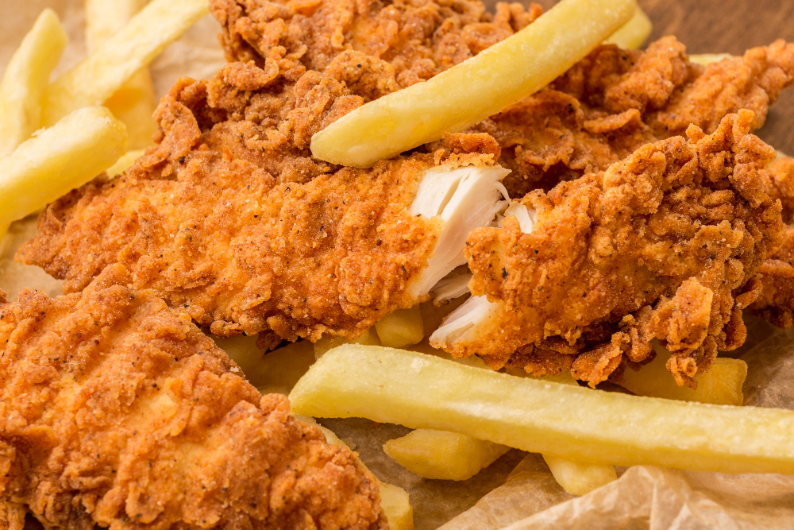

Home
Silly Fried Chicken

Generously provided by www.freepik.com
Description
Fried chicken is a simple food that everybody can enjoy! Crispy on the outside, juicy on the inside, what's not there to love?
This fried chicken recipe is sure to knock your socks off with its impactful flavor and little bit of extra heat!
Warning: The following recipe is fictional, intentionally silly, and should not be recreated!
Ingredients
- 4 chicken breasts
- 500 grams corn starch
- 1 lb of flower (Any flowers will do. I like tulips!)
- 60 gallons of extra hot hot sauce
- Enough peanut oil to fry it all
- 1 ostrich egg (ONLY OSTRICH EGGS! Chicken eggs DO NOT WORK!)
Steps
- Make a meatloaf.
- Throw it away, because that is the wrong recipe!
- In a mixing bowl combine the starch and flowers.
- Throw the flowers around your kitchen to liven up the place and make it prettier!
- Cut the chicken into chicken tender sized pieces.
- Coat the chicken in hot sauce, then place in fryer of peanut oil.
- Take them out of the fryer when they're done and crispy!
- Enjoy! Dip in more hot sauce if it's not spicy enough.